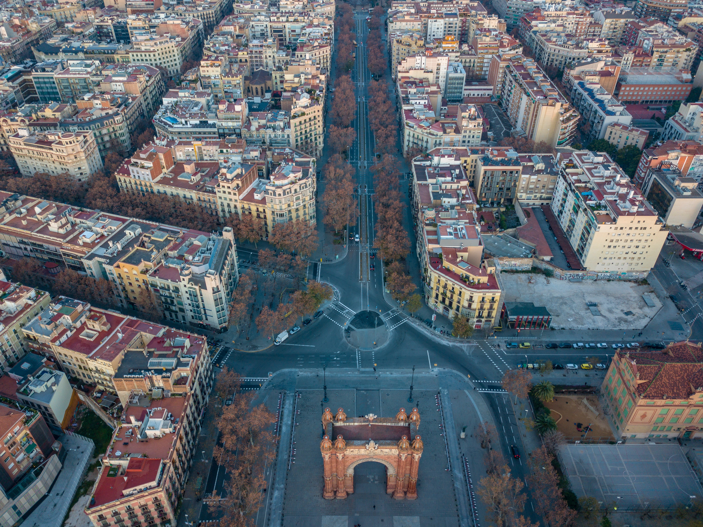
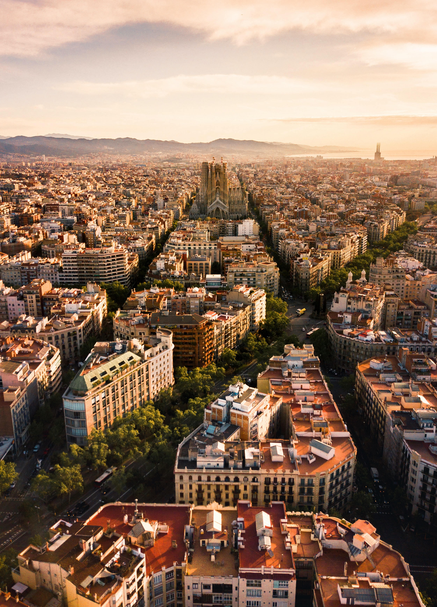

Välkommen till en hemsida om Fc Barcelona
Den här webbsidan är en webbsida som kommer skriva om Fc Barcelona som en förening och fokusen kommer ligga hos herr fotbollen. Fc Barcelona är en klubb som har flera lag inom olika sporter, som t.ex basketboll, handboll, futsal, inlinehockey och sist men inte minst fotboll där fc Barcelona är mest känd för. På den här sidan kan du läsa om fc Barcelonas historia och du hittar en kort fattat information om truppen, tittlar och tillslut lite om de andra sporten fc Barcelona är en del av.
Barcelona som en stad
Barcelona är Kataloniens huvudstad och en av Spaniens största städer. Staden har ungefär 1,6 miljoner invånar och om man räknar med förstäderna bor det 5 miljoner i stadsområdet. Barcelona är kulturellt centrum för Katalonien. Eftersom Barcelona är en stor del av både Katalonien och Spanien så talas det båda språken. Staden är en av EU:s största storstädsregion då staden besöks av 8 miljoner turister årligen.
Det finns masor som turisterna vill se. Det finns rester av romerska murar och antika kolonner i det tätbyggda medeltida stadskärna.
